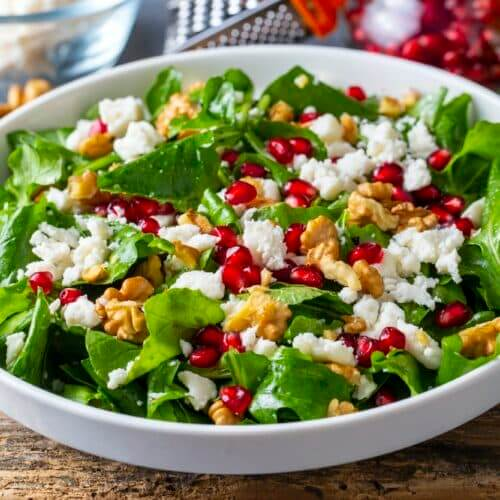

Yemek Tariflerine Hoş Geldiniz
Anasayfa
Çorbalar
Ana Yemekler
Salatalar
Mezeler

Roka Salatası
Malzemeler
- 1 demet roka
- 1 adet domates
- 1 adet salatalık
- 1 adet kırmızı soğan
- Yarım limon suyu
- 2-3 yemek kaşığı zeytinyağı
- Tuz
- Nar ekşisi, ceviz içi, beyaz peynir (İsteğe bağlı)
Yapılışı
-
Rokaları ayıklayıp güzelce yıkayın, suyunu süzün ve iri parçalar halinde doğrayın.
-
Domatesi küp küp, salatalığı halka veya yarım ay şeklinde doğrayın.
-
Kırmızı soğanı ince ince piyazlık doğrayın (isteğe göre tuzla ovup acısını alabilirsiniz).
-
Geniş bir kaseye tüm malzemeleri alın.
-
Zeytinyağı, limon suyu ve tuzu ekleyip harmanlayın.
-
Servis tabağına alıp üzerine isteğe göre nar ekşisi gezdirebilir, ceviz ya da beyaz peynirle süsleyebilirsiniz.
👉 Özellikle balık ve et yemeklerinin yanında çok yakışır.